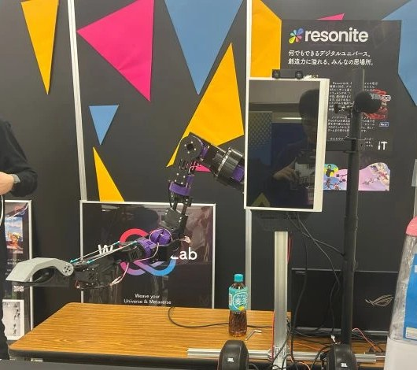

Robotics · Extended Reality · WeaverseLab(株)
Metaverse-to-Robot
Tele-operation
≤5 msRound-trip latency
9-DOFHumanoid arm
1 MbaudUART speed
Overview
Built a real-time tele-operation system linking a virtual avatar in the Resonite metaverse platform to a physical 9 degree-of-freedom humanoid robot arm. The system captures pose data from the avatar and drives the physical robot in real time with minimal latency.

Technical Implementation
- Implemented a Python relay that streams commands over OSC ↔ UART at 1,000,000 baud, achieving ≤5 ms round-trip latency between the virtual and physical systems
- Developed real-time inverse kinematic mapping that converts avatar pose data to robot joint angles
- Redesigned the open-source 9-DOF humanoid arm in Fusion 360 for improved mechanical compatibility with the tele-operation use case
Tools & Stack
Python
OSC
UART
Inverse Kinematics
Fusion 360
Resonite
Robotics
Mixed Reality